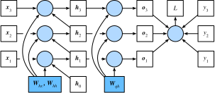

如果读者做了上一节的练习，就会发现，如果不裁剪梯度，模型将无法正常训练。为了深刻理解这一现象，本节将介绍循环神经网络中梯度的计算和存储方法，即通过时间反向传播（back-propagation through time）。
我们在“正向传播、反向传播和计算图”一节中介绍了神经网络中梯度计算与存储的一般思路，并强调正向传播和反向传播相互依赖。正向传播在循环神经网络中比较直观，而通过时间反向传播其实是反向传播在循环神经网络中的具体应用。我们需要将循环神经网络按时间步展开，从而得到模型变量和参数之间的依赖关系，并依据链式法则应用反向传播计算并存储梯度。
简单起见，我们考虑一个无偏差项的循环神经网络，且激活函数为恒等映射（$\phi(x)=x$）。设时间步$t$的输入为单样本$\boldsymbol{x}_t \in \mathbb{R}^d$，标签为$y_t$，那么隐藏状态$\boldsymbol{h}_t \in \mathbb{R}^h$的计算表达式为
$$\boldsymbol{h}t = \boldsymbol{W}{hx} \boldsymbol{x}t + \boldsymbol{W}{hh} \boldsymbol{h}_{t-1},$$
其中$\boldsymbol{W}{hx} \in \mathbb{R}^{h \times d}$和$\boldsymbol{W}{hh} \in \mathbb{R}^{h \times h}$是隐藏层权重参数。设输出层权重参数$\boldsymbol{W}_{qh} \in \mathbb{R}^{q \times h}$，时间步$t$的输出层变量$\boldsymbol{o}_t \in \mathbb{R}^q$计算为
$$\boldsymbol{o}t = \boldsymbol{W}{qh} \boldsymbol{h}_{t}.$$
设时间步$t$的损失为$\ell(\boldsymbol{o}_t, y_t)$。时间步数为$T$的损失函数$L$定义为
$$L = \frac{1}{T} \sum_{t=1}^T \ell (\boldsymbol{o}_t, y_t).$$
我们将$L$称为有关给定时间步的数据样本的目标函数，并在本节后续讨论中简称为目标函数。
为了可视化循环神经网络中模型变量和参数在计算中的依赖关系，我们可以绘制模型计算图，如图6.3所示。例如，时间步3的隐藏状态$\boldsymbol{h}3$的计算依赖模型参数$\boldsymbol{W}{hx}$、$\boldsymbol{W}_{hh}$、上一时间步隐藏状态$\boldsymbol{h}_2$以及当前时间步输入$\boldsymbol{x}_3$。

刚刚提到，图6.3中的模型的参数是$\boldsymbol{W}{hx}$、$\boldsymbol{W}{hh}$和$\boldsymbol{W}{qh}$。与“正向传播、反向传播和计算图”一节中的类似，训练模型通常需要模型参数的梯度$\partial L/\partial \boldsymbol{W}{hx}$、$\partial L/\partial \boldsymbol{W}{hh}$和$\partial L/\partial \boldsymbol{W}{qh}$。 根据图6.3中的依赖关系，我们可以按照其中箭头所指的反方向依次计算并存储梯度。为了表述方便，我们依然采用“正向传播、反向传播和计算图”一节中表达链式法则的运算符prod。
首先，目标函数有关各时间步输出层变量的梯度$\partial L/\partial \boldsymbol{o}_t \in \mathbb{R}^q$很容易计算：
$$\frac{\partial L}{\partial \boldsymbol{o}_t} = \frac{\partial \ell (\boldsymbol{o}_t, y_t)}{T \cdot \partial \boldsymbol{o}_t}.$$
下面，我们可以计算目标函数有关模型参数$\boldsymbol{W}{qh}$的梯度$\partial L/\partial \boldsymbol{W}{qh} \in \mathbb{R}^{q \times h}$。根据图6.3，$L$通过$\boldsymbol{o}1, \ldots, \boldsymbol{o}_T$依赖$\boldsymbol{W}{qh}$。依据链式法则，
$$ \frac{\partial L}{\partial \boldsymbol{W}{qh}} = \sum{t=1}^T \text{prod}\left(\frac{\partial L}{\partial \boldsymbol{o}t}, \frac{\partial \boldsymbol{o}_t}{\partial \boldsymbol{W}{qh}}\right) = \sum_{t=1}^T \frac{\partial L}{\partial \boldsymbol{o}_t} \boldsymbol{h}_t^\top. $$
其次，我们注意到隐藏状态之间也存在依赖关系。 在图6.3中，$L$只通过$\boldsymbol{o}_T$依赖最终时间步$T$的隐藏状态$\boldsymbol{h}_T$。因此，我们先计算目标函数有关最终时间步隐藏状态的梯度$\partial L/\partial \boldsymbol{h}_T \in \mathbb{R}^h$。依据链式法则，我们得到
$$ \frac{\partial L}{\partial \boldsymbol{h}T} = \text{prod}\left(\frac{\partial L}{\partial \boldsymbol{o}_T}, \frac{\partial \boldsymbol{o}_T}{\partial \boldsymbol{h}_T} \right) = \boldsymbol{W}{qh}^\top \frac{\partial L}{\partial \boldsymbol{o}_T}. $$
接下来对于时间步$t < T$， 在图6.3中，$L$通过$\boldsymbol{h}_{t+1}$和$\boldsymbol{o}_t$依赖$\boldsymbol{h}_t$。依据链式法则， 目标函数有关时间步$t < T$的隐藏状态的梯度$\partial L/\partial \boldsymbol{h}_t \in \mathbb{R}^h$需要按照时间步从大到小依次计算：
$$ \frac{\partial L}{\partial \boldsymbol{h}t} = \text{prod}\left(\frac{\partial L}{\partial \boldsymbol{h}{t+1}}, \frac{\partial \boldsymbol{h}{t+1}}{\partial \boldsymbol{h}_t} \right) + \text{prod}\left(\frac{\partial L}{\partial \boldsymbol{o}_t}, \frac{\partial \boldsymbol{o}_t}{\partial \boldsymbol{h}_t} \right) = \boldsymbol{W}{hh}^\top \frac{\partial L}{\partial \boldsymbol{h}{t+1}} + \boldsymbol{W}{qh}^\top \frac{\partial L}{\partial \boldsymbol{o}_t}. $$
将上面的递归公式展开，对任意时间步$1 \leq t \leq T$，我们可以得到目标函数有关隐藏状态梯度的通项公式
$$ \frac{\partial L}{\partial \boldsymbol{h}t} = \sum{i=t}^T {\left(\boldsymbol{W}{hh}^\top\right)}^{T-i} \boldsymbol{W}{qh}^\top \frac{\partial L}{\partial \boldsymbol{o}_{T+t-i}}. $$
由上式中的指数项可见，当时间步数$T$较大或者时间步$t$较小时，目标函数有关隐藏状态的梯度较容易出现衰减和爆炸。这也会影响其他包含$\partial L / \partial \boldsymbol{h}t$项的梯度，例如隐藏层中模型参数的梯度$\partial L / \partial \boldsymbol{W}{hx} \in \mathbb{R}^{h \times d}$和$\partial L / \partial \boldsymbol{W}_{hh} \in \mathbb{R}^{h \times h}$。 在图6.3中，$L$通过$\boldsymbol{h}_1, \ldots, \boldsymbol{h}_T$依赖这些模型参数。 依据链式法则，我们有
$$ \begin{aligned} \frac{\partial L}{\partial \boldsymbol{W}{hx}} &= \sum{t=1}^T \text{prod}\left(\frac{\partial L}{\partial \boldsymbol{h}t}, \frac{\partial \boldsymbol{h}_t}{\partial \boldsymbol{W}{hx}}\right) = \sum_{t=1}^T \frac{\partial L}{\partial \boldsymbol{h}t} \boldsymbol{x}_t^\top,\ \frac{\partial L}{\partial \boldsymbol{W}{hh}} &= \sum_{t=1}^T \text{prod}\left(\frac{\partial L}{\partial \boldsymbol{h}t}, \frac{\partial \boldsymbol{h}_t}{\partial \boldsymbol{W}{hh}}\right) = \sum_{t=1}^T \frac{\partial L}{\partial \boldsymbol{h}t} \boldsymbol{h}{t-1}^\top. \end{aligned} $$
我们已在“正向传播、反向传播和计算图”一节里解释过，每次迭代中，我们在依次计算完以上各个梯度后，会将它们存储起来，从而避免重复计算。例如，由于隐藏状态梯度$\partial L/\partial \boldsymbol{h}t$被计算和存储，之后的模型参数梯度$\partial L/\partial \boldsymbol{W}{hx}$和$\partial L/\partial \boldsymbol{W}{hh}$的计算可以直接读取$\partial L/\partial \boldsymbol{h}_t$的值，而无须重复计算它们。此外，反向传播中的梯度计算可能会依赖变量的当前值。它们正是通过正向传播计算出来的。 举例来说，参数梯度$\partial L/\partial \boldsymbol{W}{hh}$的计算需要依赖隐藏状态在时间步$t = 0, \ldots, T-1$的当前值$\boldsymbol{h}_t$（$\boldsymbol{h}_0$是初始化得到的）。这些值是通过从输入层到输出层的正向传播计算并存储得到的。